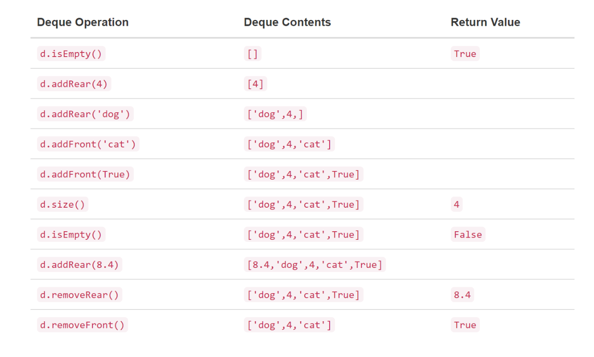

What is a Deque?
A deque, also known as a double-ended queue, is an ordered collection of items similar to the queue. It has two ends, a front and a rear, and the items remain positioned in the collection. What makes a deque different is the unrestrictive nature of adding and removing items. New items can be added at either the front or the rear. Likewise, existing items can be removed from either end. In a sense, this hybrid linear structure provides all the capabilities of stacks and queues in a single data structure
A deque's functionality and structure is very similar to that of a queue, but with a few additions.
Deque() creates a new deque that is empty. It needs no parameters and returns an empty deque.
addFront(item) adds a new item to the front of the deque. It needs the item and returns nothing.
addRear(item) adds a new item to the rear of the deque. It needs the item and returns nothing.
removeFront() removes the front item from the deque. It needs no parameters and returns the item. The deque is modified.
removeRear() removes the rear item from the deque. It needs no parameters and returns the item. The deque is modified.
isEmpty() tests to see whether the deque is empty. Like the .isEmpty() function for the queue, it needs no parameters and returns a boolean value.
size() returns the number of items in the deque. It needs no parameters and returns an integer.
As an example, if we assume that d is a deque that has been created and is currently empty, then the following image shows the results of a sequence of deque operations. Note that the contents in front are listed on the right. It is very important to keep track of the front and the rear as you move items in and out of the collection as things can get a bit confusing.
